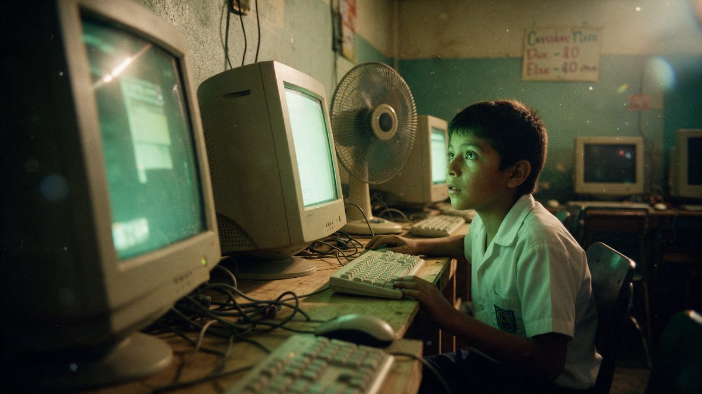
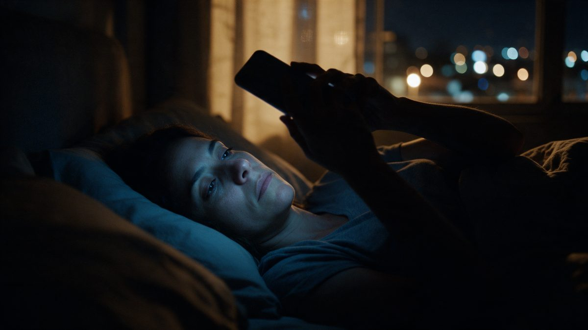
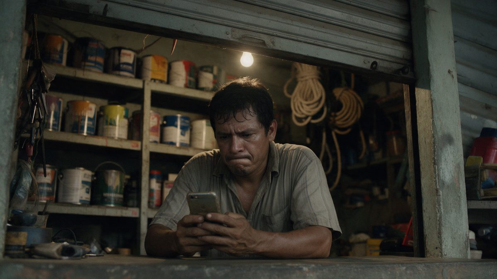
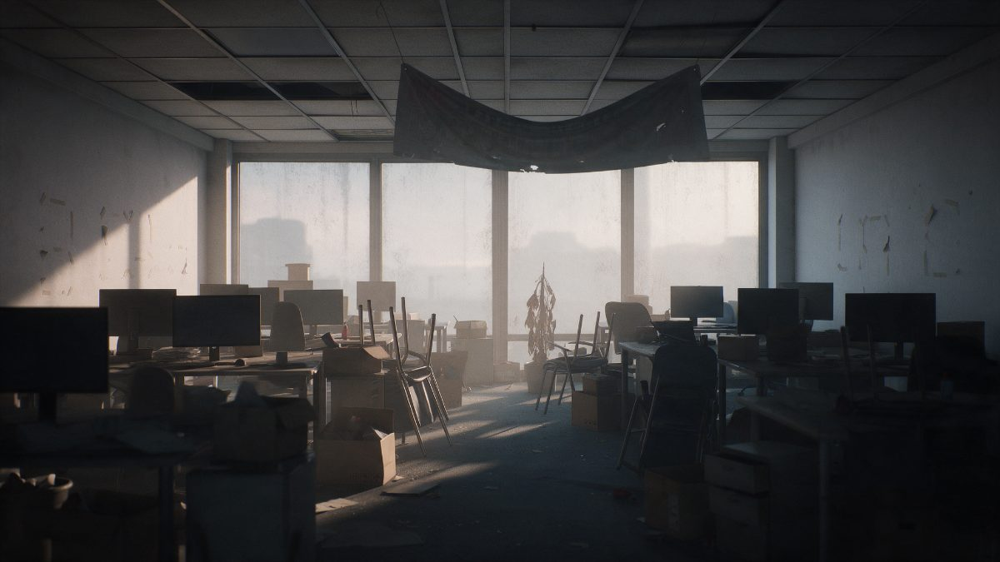
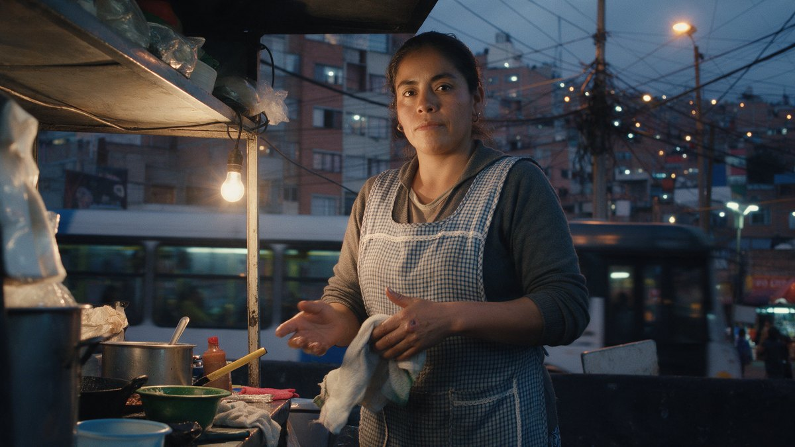
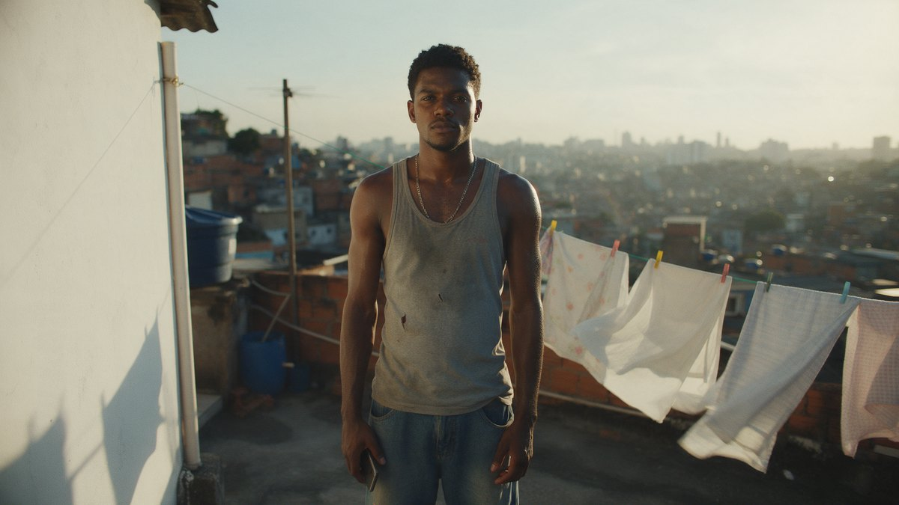
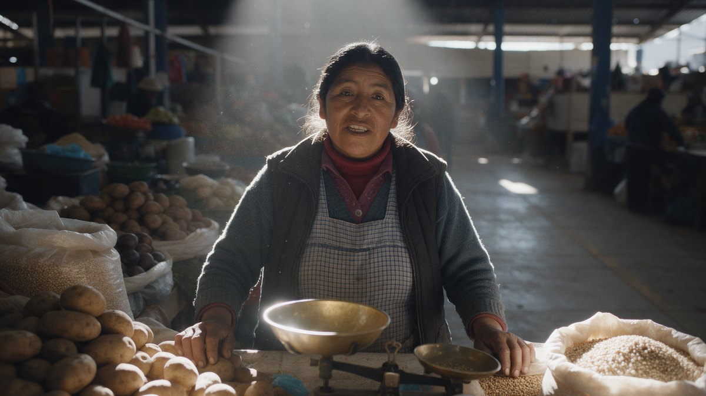
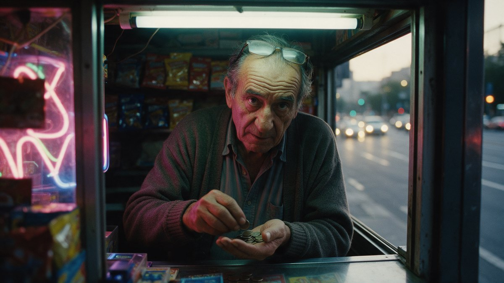
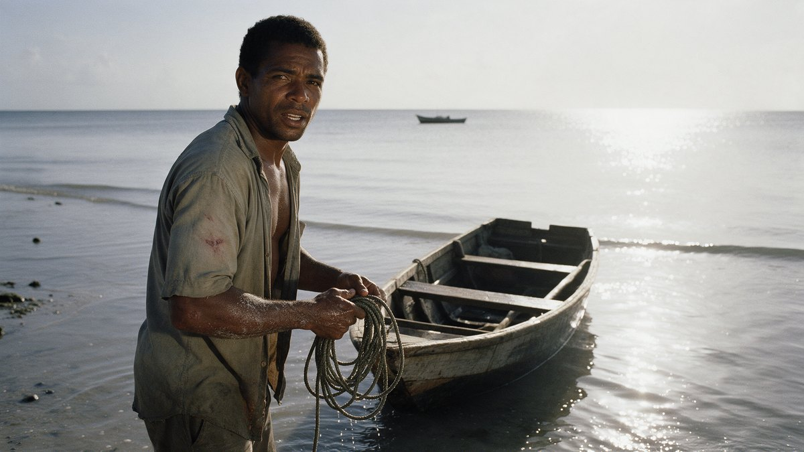
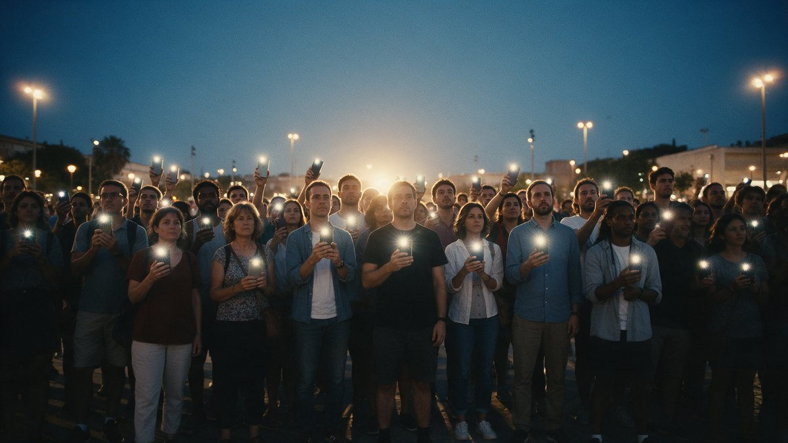

Dos minutos. Cuatro promesas que se derrumban cada vez más rápido sobre una balanza que no se mueve, un silencio en negro, y un continente entero volviendo a lo único que se puede poner en un plato. Concepto, guion de rodaje, dirección de arte y plan de producción.
La primera versión de este documento proponía una pieza documental, íntima y hondureña, narrada por una vendedora de mercado en tono paciente y sin épica. El fundador la corrigió en tres puntos, y los tres mandan sobre todo lo demás:
Primera ronda. «Sería web 1 como era, web 2 como ha sido, cómo nos roban información, web 3 que se llenó de scams, y la siguiente que murió; el sistema está mal y se debe crear algo para tener balance o hacer algo diferente. Gente real. Que inspire. Que muestre que hemos creado algo nuevo para todos.»
Segunda ronda, sobre la primera entrega: «La voz no suena a tráiler… es un tráiler full completo… nada decir de Honduras, es de Latinoamérica para Latinoamérica y el mundo… arma algo bien, algo que impacte, se sientan identificados.»
Se escribieron seis conceptos completos de tráiler, cada uno con un ángulo obligatorio distinto y ninguno viendo el trabajo de los demás. Después los juzgaron tres personas con criterios opuestos: un director de tráileres, una estratega de marca continental, y una mujer de treinta y ocho años de Lima con un negocio chico que perdió dinero en una aplicación en 2021 y desde entonces no cree en nada de esto.
| Concepto | Puntos | Por qué ganó o perdió |
|---|---|---|
| Lo que pesa cuatro derrumbes y un contador | 25,0 | El único construido como tráiler y no como documental con música encima. Funciona con el sonido apagado, que en un teléfono es la mitad de la audiencia. |
| Pésalo la balanza continental | 23,0 | El mejor escrito y el más riguroso. Perdió porque el plano en el que se juega todo era una imagen imposible, y la jurado de Lima lo detectó sola. |
| Cuánto pesa treinta voces encadenadas | 22,5 | La identificación más real del lote, y de lejos. Su material escrito se injertó entero en el ganador. |
| Pesa o no es el espejo en el plato | 19,5 | Tenía la mejor imagen suelta de los seis —la mano sobre el espejo y el fiel saltando—. Se injertó en la era dos. |
| Una promesa no pesa un solo plano continuo | 18,0 | La ambición más alta y el peor perfil de riesgo: cada costura es un punto de falla y no hay plan B. |
| Lo que siempre estuvo el continente que tuvo el metal | 17,5 | Dueño de la mejor línea del lote y la desperdiciaba. Bonito e inofensivo, dijo la jurado de Lima. |
Pero lo que de verdad cambió la pieza no fueron los puntajes: fueron las tres cosas que los tres jurados, por separado, dijeron que ninguno de los seis había resuelto.
La mecánica entera cabe en seis reglas. El espectador no va a notar ninguna; las va a sentir todas.
Un número quemado abajo a la izquierda: 4, 3, 2, 1, uno por era. Y las eras se acortan — catorce segundos, diez, siete, cuatro— mientras se llenan de cortes: la era uno tiene tres planos, la cuatro tiene nueve en cuatro segundos. En el fotograma exacto en que la imagen se cierra, el 1 pasa a 0 y ese cero crece hasta convertirse en la cartela. El mecanismo se cierra y paga la palabra.
Los tres primeros bloques van a sangre, con el encuadre estrechado dentro del plano —un vano, un vidrio, un hombro— y no con una máscara negra. Solo las eras dos, tres y cuatro se achican de verdad, hasta quedar del tamaño de una tarjeta. El espectador tiene diecisiete segundos de pantalla llena antes de que la imagen empiece a apretarse, y por eso el cierre duele. En el bloque 8 el cuadro se abre de una línea de un píxel a pantalla completa en doce fotogramas, y no se vuelve a cerrar.
En ese único fotograma cambian juntas la ventana (se abre), la óptica (de teleobjetivo a través de algo, a fijo limpio), el obturador (de 1/1000 a 180 grados), el color (del verde-cian a luz cálida motivada: el primer tono de piel correcto de la pieza) y el sonido (de máquinas a manos). Ese corte es el argumento.
Ni un pixel dorado antes del segundo 40. El latón de la balanza va deslustrado y casi gris, las pesas son de hierro, las monedas de la era tres son de plástico y se desaturan, el confeti es de lámina plateada. El primer oro que ve el espectador en toda la pieza es metal certificado.
El compás dura diez segundos y desde el segundo 6 hay un relé que hace clic en el uno de cada compás, y no para hasta el último fotograma de la era cuatro. Es el tiempo de bloque de la cadena, y no se dice en voz alta ni se rotula: el espectador lo tiene en el cuerpo, que era todo el punto. Cuando en el bloque 10 aparece la sala de servidores, el mismo clic sale de un relé real y ahí entiende qué venía oyendo.
Una balanza de dos platos con lengüeta —el fiel, no «la aguja»— aparece ocho veces y siempre dice lo mismo: centro, o fuera del centro. En el segundo 9 una vendedora enseña la regla con dos pesas de hierro iguales. Después, cuatro promesas impresas no la mueven. Y en el bloque 15, por primera y única vez en dos minutos, el fiel vuelve al centro con algo que no es una pesa de calibración.
Dos minutos exactos, dieciséis bloques. El primer acto llega hasta el 0:32; el silencio dura dos segundos y medio; el segundo acto arranca en 0:34,5 y el cierre cae en 1:55. Hay cuatro impactos de sonido en toda la pieza y ninguno es un golpe de librería: el fiel disparado fuera del centro, los dos golpes de pico con la tesis en negro, el clic de un ratón bajado dos octavas y el plato de latón asentándose contra su tope.
| Bloque | Qué se ve | Qué se oye y quién habla |
|---|---|---|
| 1 · LO QUE PERDÍ 0:00–0:08 (8 s) | Sin negro de apertura. Fotogramas 1 a 16: macro del fiel de la balanza disparado fuera del centro, vibrando, con su sonido real. No es un objeto prometiendo significar algo: es un evento de medio segundo que planta el instrumento y se cobra en el bloque 2. Después, cuatro caras de 1,8 s, idénticas en talla y altura —plano medio corto, 50 mm, cámara a la altura de los ojos—, con el lugar de trabajo desenfocado a dos pasos detrás. Condición: Ranura versionada: en cada máster la primera cara es la del mercado de ese máster y el léxico de las cuatro líneas sale del glosario cerrado. En el PT-BR la costurera pasa al puesto 1. En el rioplatense entra la freelance con «Metí el sueldo». | Sonido directo y el ruido de cada lugar sin limpiar. Micrófono cerca y seco, cada línea entrando exactamente sobre el corte y 4 a 6 fotogramas de silencio duro después de cada una: golpean, no fluyen. Voz: 1 (repartidor, 24), 2 (enfermera, 38), 3 (estudiante, 19), 4 (costurera, 35, en portugués con subtítulo del mismo cuerpo que el resto). |
| 2 · LA REGLA 0:08–0:13 (5 s) | A sangre, sin máscara: el encuadre se estrecha dentro del plano con el vano del puesto. Mercado techado, luz de tragaluz y sodio. Macro 100 mm sobre la balanza de dos platos de latón deslustrado. Las manos de la vendedora de 62 ponen una pesa de calibración de hierro de un gramo en el plato izquierdo y otra igual en el derecho: el fiel va al centro y se queda clavado en su marca. Inserto vertical del fiel en el centro con su sombra sobre la escala. Condición: Ley de arte vinculante: pesas de hierro, latón deslustrado, ni un pixel dorado ni cálido brillante hasta el bloque 9. Instrumento único: dos platos y FIEL, verificado con una vendedora de mercado en cada país de rodaje. | Cadena, muelle, la pesa de hierro contra el latón, el mercado adentro. Sin música. En el segundo 6 empezó el relé que hace click en el uno de cada compás de diez segundos y va a seguir hasta el final de la era cuatro. Voz: 5 (vendedora, 62, desnuda, sin música: es el motivo que vuelve en el bloque 12), 6 (vendedora, 62, casi para sí, sobre el papel: la siembra del remate). |
| 3 · ERA UNO — EL CUADERNO 0:13–0:17 (4 s) | A sangre, encuadre estrechado por el vidrio del cubículo y por un hombro. Tres planos y un solo ancla de sentido. Teleobjetivo de 85 mm, cámara en mano, foco llegando tarde, obturador 1/1000, verde de tubo en las caras, nadie con la cara entera. Uno: el precio de la hora escrito a mano y borroneado. Dos: el cuaderno donde alguien anota número de máquina y minutos —nadie te pidió el nombre—, que es la línea del barbero hecha imagen y lo entiende cualquier generación, con o sin memoria de la época. Condición: Los tres planos se ruedan en tres locaciones del mismo tipo en tres países —cubículo de madera, mesa larga de cyber, box de lan house con teclado de plástico— y se montan mezclados, así el bloque no le pertenece a nadie. | Ventilador, teclas duras, el lápiz sobre el cuaderno. Pulso de monedas sobre madera a 60 bpm por encima del relé, que no se mueve, y la cama de sub-graves un escalón arriba. Voz: 7 (barbero, 41). |
| 4 · ERA DOS — LA FOTOCOPIA Y EL ESPEJO 0:17–0:23 (6 s) | Acá empieza la ventana: pillarbox 9:12 dentro del 9:16. Ocho planos. Mostrador de trámites reconstruido: la fotocopiadora escupe ocho veces el mismo formulario —nombre, huella, dirección— y otra mano las archiva; la barra de luz barriendo el cuadro; una fila de costado, nadie completo en cuadro; caras iluminadas solo por teléfonos y cortadas al nivel de los ojos. Los teléfonos llevan funda y pantalla llena de apps. Condición: Ningún documento de identidad se reproduce: la fotocopiadora copia un formulario sintético y cualquier documento aparece de canto, dentro de un sobre o fuera de foco. Nada legible y ningún dato personal. | Fotocopiadora, sellos, un timbre de turno, notificaciones reales superponiéndose hasta volverse enjambre, un obturador cada vez que aparece una cara. Pulso a 92 sobre el mismo relé. Sin música dramática encima del espejo: funciona si el espectador lo entiende medio segundo antes de que termine. Voz: 8 (estudiante, 19), 9 (estudiante, 19). |
| 5 · ERA TRES — LA MESA QUE SE PLEGABA 0:23–0:28 (5 s) | Ventana 9:14, casi una ranura. Seis planos. Se cayó la terraza: queda lo que cuenta. Un teléfono reventado de mensajes que prometen duplicar, filmado sobre el hombro e ilegible por diseño; alguien reparte monedas de plástico metalizado, desaturadas en corrección; un hombre cobrando en efectivo en una mesa plegable con un cartel escrito a mano; la mesa se pliega, la cámara sigue el pliegue y no queda nadie: dos sillas y un vaso. Vuelta al plato: cae un puñado de confeti de lámina plateada y el fiel no se mueve un milímetro. Contador: 2. Condición: Ninguna marca, ningún logotipo, ninguna criptomoneda nombrada, ningún gráfico de precio, ninguna interfaz imitada. Nadie queda en ridículo: a quien recibió el mensaje se la filma guardando el teléfono, que es lo que hicimos todos. | Música de fiesta filtrada como oída desde otro cuarto, vibración de teléfono sobre vidrio repetida sin respuesta, la percusión de objetos saliéndose de rejilla. Pulso a 120 con la compresión sucia de una cámara de vigilancia real, nunca un glitch generado. Sub-graves dos escalones arriba. Voz: 10 (costurera, 35, en portugués con subtítulo: es su segunda línea y pone portugués antes del segundo 25). |
| 6 · ERA CUATRO — LA QUE NI LLEGÓ 0:28–0:32 (4 s) | La imagen reducida a un rectángulo del tamaño de una tarjeta. Nueve planos en vez de once, ninguno de más de diez fotogramas salvo el último: un escenario de lanzamiento con sesenta sillas puestas y nadie sentado; visores genéricos sobre pedestales, sin marca y sin silueta reconocible; racks con las luces apagadas; la moqueta con la marca de donde estuvo la tarima; y el plato: entra una palma abierta y no trae nada. El último plano se sostiene 18 a 20 fotogramas: la silla vacía girando sola hasta casi detenerse. Condición: Se critica una época, no una empresa: sala de eventos alquilada cualquiera, visores sin marca ni forma reconocible, y en ningún documento de producción se nombra un caso, una empresa, un año ni una ciudad. | Pulso a 140, aire acondicionado, un tono de sala que no resuelve. En el último fotograma el pulso se corta a mitad de compás y el relé se calla con él: es la única vez en la pieza que el reloj se detiene. Voz: 11 (dos voces encimadas y secas: enfermera y vendedora). |
| 7 · CERO 0:32–0:34,5 (2,5 s) | El rectángulo se cierra a una línea horizontal de un píxel. En ese mismo fotograma el contador pasa de 1 a 0, y ese 0 crece desde la esquina hasta ocupar el centro y convertirse en la cartela: CERO. Negro con un grano mínimo, que es la prueba de que la imagen sigue viva en un feed. El contador cierra su mecanismo, la regla de la balanza cobra y la cartela deja de ser una palabra suelta. El silencio tiene tres seguros y dos son visuales, para que funcione en mudo. | Casi nada, que no es nada: queda un solo hilo audible apenas sobre el piso —la cadena de la balanza terminando de asentarse— que decae a cero en el último medio segundo, para que en un parlante de teléfono no se lea como audio cortado. Debajo, el sub a 35 Hz para sala. |
| 8 · NOS FALTÓ PESO — EL SEGUNDO AIRE 0:34,5–0:40 (5,5 s) | Negro. Un golpe de pico contra roca que no ilumina nada. Segundo golpe. En la oscuridad, una sola voz dice la única tesis de la pieza: lo primero que vuelve después del silencio no es música, es una persona. Se enciende la lámpara de casco y aparece la cara del minero: 41 años, polvo en las pestañas, protección puesta, cámara a la altura de sus ojos, 35 mm limpio. El cuadro se abre de la línea al 9:16 a sangre en 12 fotogramas y no se vuelve a cerrar. | Pico contra piedra grabado a 15 cm de la roca, con la reverberación del socavón: la escala viene de ahí y no de más volumen. Respiración dentro del casco. Goteo. Todavía sin percusión. Al final del bloque vuelve el relé y con él el chelo, una sola nota larga. Voz: 12 (minero, 41, en negro absoluto, sonido directo con la reverberación de la roca), 13 (minero, 41, en el plano largo). |
| 9 · EL FOSO 0:40–0:51 (11 s) | Acá la balanza baja a ser instrumento y el foso pasa a ser el protagonista, porque una balanza de mercado la alquila cualquiera mañana y un turno con nombres no. Vertical construido con altura: el tiro del socavón filmado desde abajo con 24 mm; en el mismo tiro, el cambio de turno —diez personas saliendo y diez entrando, cascos puestos, equipo completo—; la tabla de turno llena de nombres escritos a mano, la única letra manuscrita de la pieza; una báscula industrial en la boca de mina; guantes de algodón sobre una barra certificada, filmada sin que el número se lea. Condición: No se filma puerta de bóveda, cerradura, acceso, disposición ni ningún elemento de seguridad, en ninguna versión: la mayoría de las pólizas de custodia lo prohíbe y es causal de exclusión de cobertura. El número de la barra va desenfocado o alterado en post. | Entra la percusión humana como una sola figura de seis golpes —cajón, bombo legüero, tambora, surdo, tarima de zapateado y el propio pico marcando el uno—, grabada por separado y montada como figura, no como medley, y ningún instrumento suena solo. El chelo sostiene. Voz: 14 (operadora de bóveda, 38, caribeña, con la barra en las manos), 15 (operadora de bóveda, 38: acá se pronuncia la marca en voz alta por primera vez, en español y en boca de quien tiene el metal en l. |
| 10 · SIETE MÁQUINAS 0:51–0:55 (4 s) | Cuatro segundos, no nueve: un tráiler promete y la prueba es trabajo de la página de destino. Sala de servidores en vertical: siete luces de validador apiladas en columna y un empuje lateral corto para que el espectador pueda contarlas solo. La ingeniera de red, 29 años, con la mano en un cable, dice el hecho al lado de la máquina que lo produce, en portugués y subtitulada: ningún dato entra como cartela si hay una persona que lo pueda decir. Condición: Cero mockup, cero interfaz dibujada: lo que se ve de producto se captura del producto real, en teléfonos con funda y pantalla llena de apps. No se compone en post ningún número. | Ventiladores de rack afinados y convertidos en un drone. El relé de la sala hace click en el uno del compás y recién ahí el espectador entiende qué venía oyendo. La percusión suma la segunda capa. Azul profundo, no clínico. Voz: 16 (ingeniera de red, 29, en portugués), 17 (ingeniera de red, 29, en portugués). |
| 11 · NADIE SE APRUEBA SOLO 0:55–1:06 (11 s) | La estudiante —la misma cara del bloque 1 y la misma del espejo— levanta la cara hacia la cámara frontal de su teléfono: Genesis ID la verifica y esa verificación le sirve en todas las apps del ecosistema. Es el cierre del arco de la información y no necesita cartela, porque el espectador ya la vio dos veces. Corte a un escritorio de cumplimiento reconstruido: luz de oficina normal, dos monitores comunes, camisa limpia, taza, silla de oficina. Condición: Ninguna cartela, línea ni footer promete verificación única, para siempre ni permanente: hay debida diligencia continua y vamos a re-verificar. | Silencio de oficina, un ventilador, y el clic del mouse como segundo impacto de la pieza: grabado real, bajado dos octavas, disparado solo, en 1:00. Voz: 18 (estudiante, 19), 19 (estudiante, 19), 20 (operador de cumplimiento, 34, sin rostro en cuadro). |
| 12 · LOS OFICIOS 1:06–1:20 (14 s) | Nueve planos rodados, seis montados por máster: la regla de metraje igual queda intacta —exactamente 1,4 s cada uno, misma talla, misma altura— y cada mercado ve su propio relevo. Condición: El cobro con QR completándose no entra en esta versión: se rueda solo hasta el gesto de acercar el teléfono, sin pantalla de confirmación. CONDICIONADA. | Percusión completa y el bpm da su único escalón: de 84 a 96. Voz: 21 (barbero), 22 (costurera, en portugués), 23 (repartidor), 24 (vendedora), 25 (operadora de bóveda), 26 (minero), 27 (teleoperadora), 28 (freelance), 29 (barbero caribeño, en inglés o créole). |
| 13 · EL MISMO GRAMO 1:20–1:23 (3 s) | Dos planos consecutivos de la misma talla y la misma altura, 1,5 s cada uno: dos manos distintas, en dos lugares distintos, cada una sosteniendo una pieza idéntica de un gramo con su sello. Corte. No hay operación, no hay app, no hay envío, no hay mapa, no hay frontera en cuadro y nadie manda nada: hay equivalencia, que es la tesis literal de la pieza y lo único que le da permiso al espectador de imaginar lo que la marca todavía no puede prometer. | Los dos ambientes distintos, uno por plano, sin cruzarse. La percusión sigue en 96 y el coro sostiene. El sello de una y el sello de la otra suenan igual. |
| 14 · LA SALIDA 1:23–1:45 (22 s) | El bloque que contesta qué es una puerta de salida, y la dirección es la única que existe: él llega con dinero de curso legal, paga en el mostrador y se va con metal. Siete planos y el último es largo. Mostrador de trabajo con una balanza encima, sin ninguna estética de sucursal. Uno: el repartidor del segundo 1 llega, casco en la mano. Dos: paga en el mostrador, sin cifra visible, sin saldo, sin pantalla. Tres: la balanza del mostrador con una pieza de un gramo de metal certificado y su sello. Cuatro: macro del comprobante de papel y del sello cayendo. Cinco: su cara mirando la balanza, no la cámara. Condición: Esta es la dirección única y es rodable hoy: la rampa está entre dinero de curso legal y metal. | Mercado alrededor, papel, el sello, el bip de la balanza del mostrador. La música no acelera: suma el coro y baja de volumen durante los seis segundos del plano largo para que se oiga pesar y se oiga el papel. Voz: 31 (repartidor, 24, en el mostrador, sonido directo: segunda y última vez que la marca se pronuncia en voz alta, en su versión alternativa sin nombre también rodada). |
| 15 · EL FIEL VUELVE AL CENTRO 1:45–1:55 (10 s) | Corte exacto al encuadre del bloque 2: misma balanza, misma madera, misma luz de mercado, misma altura, mismo 100 mm. En el plato izquierdo sigue la pesa de calibración de hierro de un gramo que está ahí desde el segundo 9. La vendedora de 62 pone en el plato derecho una sola pieza de metal certificado de un gramo con su sello. Mientras el plato baja, ella dice la primera línea del remate: la frase va sobre la acción, no después. El plato baja, la cadena se tensa, el latón golpea el tope, el fiel oscila dos veces y se clava en el centro. Condición: Ranura versionada y hay que decidirlo antes de rodar el bloque 2, porque la vendedora del remate es la misma que enseña la regla: cinco segundos, una mujer frente a la misma balanza, mismo encuadre, rodados cuatro veces en cuatro mercados con cuatro vendedoras. | Toda la música se corta un fotograma antes del impacto. El golpe no es un braam: es el plato de latón asentándose contra su tope, grabado real con dos micrófonos a distinta distancia, bajado dos octavas y triplicado con tres milisegundos de retardo. Voz: 32 (vendedora, 62, sobre el plato bajando), 33 (vendedora, 62, a cámara, encima del golpe: callback de la línea 6, ahora en voz alta y con la cara en pantalla). |
| 16 · CARTELAS 1:55–2:00 (5 s) | Negro. Cartela 1, 3 s: la marca, ORIGEN, y debajo, en cuerpo chico dentro de la zona segura, la definición y el texto legal, que es el sexto texto de la pieza y el único que no se negocia. Beat. Cartela 2, 2 s: la orden sola, en la lengua del máster, subtitulada. Nada más: ni nombres del ecosistema en el último cuadro, ni definición, ni letra chica. El último cuadro de un tráiler es una palabra. Condición: Falta un dato y no lo relleno: nadie entregó la dirección web, el destino de descarga ni la dirección del explorador público de la cadena. | Un último tintineo de la cadena de la balanza sobre el negro y silencio. Corte a seco, sin cola de reverb. |
Todo el texto hablado de la pieza. Ninguna línea pasa de nueve palabras y ninguna se dice en voz de locutor: son treinta y una tomas de sonido directo, grabadas en el lugar de trabajo de cada persona. En la primera mitad nadie tiene autoridad —las voces se reparten y se mezclan a propósito—; la primera voz sola de la pieza es la del minero, después del silencio.
Las líneas marcadas por mercado cambian de léxico y no de sentido: «metí la plata del alquiler» en unos másters, «metí el sueldo» o «botei o salário» en otros. Y la última palabra de la pieza cambia de forma sin cambiar de idea: Pésalo · Pesalo · Pesa · Weigh it.
Ninguna es actriz profesional salvo el operador de cumplimiento, que se interpreta a propósito para no exponer a nadie real. Ninguna subregión aporta más de dos de las trece. Nadie sonríe a cámara, nadie se filma desde arriba, nadie aparece sin su oficio en el mismo plano y nadie es filmado pidiendo.
| Quién | Qué hace en la pieza | Por qué está |
|---|---|---|
| Vendedora de mercado, 62 años, andina, manos de trabajo, delantal con bolsillo de monedas Puesto de verduras en mercado techado | Enseña la regla en el segundo 9 con dos pesas de hierro, dice el motivo desnudo y sin música, dice la orden bajito sobre el papel con la promesa impresa, vuelve en el relevo de oficios, pone el gramo certificado que hace caer el plato y dice las dos líneas finales, la segunda encima del golpe | Es la dueña del instrumento y la única que lo maneja sin dudar. Es el callback entero de la pieza: la única persona que dice la misma palabra dos veces, una casi para sí y otra a la cara, después de noventa segundos de gente prometiendo cosas. |
| Repartidor en moto, 24 años, afrodescendiente, Caribe en el máster base y de cada mercado en los demás Zaguán con la moto adentro, casco en la mano | Es la primera cara de la pieza y dice que metió la plata del alquiler; en los oficios dice «reparto»; en el bloque 14 llega con su dinero, paga, lo pesan, recibe en la palma abierta una pieza de un gramo de metal certificado con su sello y su comprobante, se la guarda en el bolsillo del pecho y dice. | Es la única persona que está mejor al final que al principio, y el cambio ya no es un depósito y un retiro: es que esta vez midió antes de creer. Sin él el tráiler es una acusación impecable con una ficha técnica atrás |
| Estudiante, 19 años, mestiza, México/Centroamérica Su cuarto con sus cosas —no solo la luz de la pantalla en la oscuridad— | Dice una de las cuatro líneas de pérdida; en la era dos su formulario sale ocho veces de la fotocopiadora y su mano abierta sobre el espejo del plato hace saltar el fiel; en el bloque 11 levanta la cara, se verifica con Genesis ID contra cuenta de prueba y dice que no la da en cada app y que la revi. | Es la misma cara en las dos mitades con el mismo hecho usado al revés: su identidad como mercancía y su identidad como llave. El espectador la reconoce sin que nadie lo señale. No está en el relevo de oficios porque su devolución es un bloque propio |
| Enfermera, 38 años, andina, uniforme limpio Pasillo de clínica al fondo, desenfocado | Dice «metí el aguinaldo» en el bloque 1 y es una de las dos voces encimadas de la era cuatro | La estafa alcanzó al ingeniero, al dentista y a la gerenta. Si en la pieza solo pierden los de abajo, la mitad de la audiencia mira desde arriba y con lástima, que es lo contrario de identificarse. Su uniforme es el oficio en el mismo plano, que ya es regla |
| Barbero, 41 años, Cono Sur Barbería con clientela, espejo, máquina en la mano | Sostiene con la voz la era uno sobre el cuaderno y la era cuatro; en los oficios dice «corto pelo», su local aparece en el directorio de comercios y hace el gesto de acercar el teléfono al cobro | El cobro en el mostrador es el caso de uso más cercano a la calle y hay que mostrarlo con un oficio adentro. El gesto se filma completo; la confirmación en pantalla queda CONDICIONADA |
| Costurera, 35 años, brasileña, negra Taller de costura, máquina industrial, tela apilada | Dice su línea de pérdida en portugués en los primeros ocho segundos —primera cara en el máster PT-BR—, dice la línea de la era tres en portugués, dice «eu costuro» en los oficios, su máquina aporta un golpe a la percusión y su voz va audible dentro del unísono con la frase en portugués | Brasil ya no está citado: está dentro. Tres apariciones habladas en vez de una, la ranura 1 del bloque 1 en su máster, y el único momento de comunión de la pieza dicho en dos idiomas pesando igual |
| Minero de socavón, 41 años, mestizo, Centroamérica, casco con lámpara, equipo de protección puesto, turno real Interior de mina, tiro filmado en vertical | Da los dos golpes de pico en la oscuridad, dice la tesis en negro absoluto, enciende la lámpara y avanza hacia la cámara saliendo del turno en el plano más largo del primer tramo; en los oficios dice «saco piedra» | La mitad que levanta la pieza empieza en una persona haciendo fuerza contra una piedra y no en una animación, y la tesis sale de la boca de alguien que no está vendiendo nada. |
| Operadora de bóveda, 38 años, afrocaribeña, guantes de algodón, bata Sala neutra de inspección: no se filma puerta, cerradura ni ningún elemento de seguridad | Manipula la barra certificada con el número fuera de foco, pone el gramo en la balanza de precisión al lado del teléfono con 55 ORIGEN y dice la definición en dos líneas, en español; en los oficios dice «peso oro» | Se puede mostrar metal certificado y decir cuánto vale un ORIGEN, porque es una definición. No se muestra ni se dice cuánto hay: no hay auditoría publicable y la pieza no finge tenerla. Es caribeña para que el Caribe tenga cara y no solo tambor, y habla en español para que la marca se estrene como ORIGEN |
| Ingeniera de red, 29 años, brasileña Sala de servidores, siete validadores apilados en columna, sin reloj y sin pantalla de datos en cuadro | Con la mano en un cable dice, en portugués y subtitulada, que son siete máquinas nuestras y que ORIGEN se mueve sin comisión de red | Es la voz de autoridad que se muda al portugués en los dos másters: es dato técnico, carga perfecto subtitulada y en Brasil eso es identificación y no folclore. Y el porqué de la gratuidad queda en el plano —la sala se ve— en vez de en una promesa de propiedad colectiva |
| Operador de cumplimiento, 34 años: actor, sin rostro identificable y sin credencial en cuadro Puesto reconstruido, dos monitores comunes, camisa limpia, silla de oficina, pantalla fuera de foco | Revisa un expediente sintético, aprieta RECHAZAR —que es el segundo impacto de la pieza—, se queda quieto un segundo, aprueba el siguiente y dice que nadie se aprueba solo | Es el antídoto literal de la era tres y el plano más barato y más creíble de la pieza. Aprobar no prueba nada; decir que no prueba todo. Se rueda con actor y sin identidad porque un oficial real queda asociado para siempre a nuestras decisiones y se vuelve objetivo, y porque un expediente real expone a un solicitante |
| Operador de mostrador, 40 y pico Mostrador de trabajo con una balanza encima, sin estética de sucursal | Pesa la pieza, sella el comprobante de papel, la deja en la palma abierta del repartidor y no dice una palabra | La salida tiene que tener una mano humana del otro lado y no una pantalla. No habla porque el plano es del que recibe: en seis segundos sin cortar lo único que importa es una mano cerrándose sobre un gramo que pagó y que le pesaron delante |
| Teleoperadora de call center, 27 años, afrodescendiente Puesto con audífonos, monitor, la fila de puestos detrás desenfocada | Dice «contesto llamadas» en el relevo de oficios y su teclado aporta un golpe a la percusión | Son cientos de miles de empleos en Colombia, República Dominicana y Centroamérica, y es gente que sí usa billeteras digitales. El relevo de oficios sin call center es la lista que cualquier agencia global escribe para América Latina informal |
| Freelance, 31 años, Cono Sur Mesa de la cocina, laptop, taza, cuaderno | Dice «trabajo para afuera» en el relevo de oficios; en el máster rioplatense es además la primera cara del bloque 1 con «Metí el sueldo» | Es el usuario real de activos digitales en Argentina y Venezuela y no aparecía nadie que se pareciera a quien va a descargar la app. Nadie manda nada en pantalla: dice su oficio, que es lícito y filmable |
Aquí está la parte del encargo que más fácil se hace mal. La pieza confundía, en su primera versión, no nombrar ningún país con ser de todos — y el resultado de restar lo local no es un lugar compartido: es un no-lugar. Nadie se reconoce en un promedio continental; se reconoce en su propio detalle. La solución no fue borrar más, fue multiplicar.
Mismos fotogramas, misma duración, mismo montaje, la misma cantidad de cartelas. Lo que cambia son las bocas y seis de las nueve tomas del relevo de oficios.
| Máster | Qué cambia |
|---|---|
| México y Centroamérica | Las cuatro líneas de apertura con su léxico; la orden final: PÉSALO. |
| Andes | Primera cara del mercado andino; la teleoperadora entra en el relevo; PÉSALO. |
| Caribe | El barbero caribeño dice su oficio en inglés caribeño o en créole; PÉSALO. |
| Cono Sur | La freelance pasa a ser la primera cara; la orden cambia de tónica: PESALO, sin tilde. |
| Portugués de Brasil | La costurera pasa al puesto uno; el bloque de la regla se rueda en una feria con el instrumento verificado; PESA. |
| Internacional (inglés) | Sirve además a Guyana y Belice; WEIGH IT. |
Versionar cuesta tomas, no estructura: son 131 palabras en 31 líneas de sonido directo, ninguna de más de nueve palabras, casi todas en planos de un segundo y medio, sin locutor y sin sincronía que respetar. Y los recortes de treinta y quince segundos se definen por máster y no una sola vez, porque son los que más gente ve.
Esto no se improvisa en el set. La misma frase —haber metido el dinero de todo un mes— se dice distinto en cada mercado, y decirla mal es peor que no decirla:
Esta regla reemplaza la vieja fórmula «si está gastado, es real», que era pobreza usada como certificado de autenticidad. Los teléfonos llevan funda, un protector con una grieta y la pantalla llena de aplicaciones: eso es un teléfono real. El escritorio de cumplimiento tiene dos monitores normales, silla de oficina y camisa limpia. La barbería tiene clientela, no un espejo solo. El cuarto de la estudiante tiene sus cosas, no solo la luz de la pantalla en la oscuridad. Los negros no se levantan a gris sucio. Si un plano funciona por la pobreza que se ve detrás, se descarta; y si funciona por lo roto que está el objeto, también.
| Primera mitad (0:00–0:34,5) | Segunda mitad (0:34,5–2:00) | |
|---|---|---|
| Lentes | 85 y 135 mm, siempre a través de algo | Fijos de 24, 35 y 50 mm, limpios |
| Cámara | En mano, foco que llega tarde, obturador 1/1000 | A la altura de los ojos, 180 grados, cabezal fluido o dolly corto |
| Luz | Prácticas frías, pico de verde-cian, ningún tono de piel correcto | Motivada y cálida, pieles reales, polvo visible en el haz |
| Caras | Nadie tiene la cara entera | Todas enteras y a nivel |
Excepción única: las cuatro caras de la apertura, rodadas con la gramática de la segunda mitad. El único frío que sobrevive al cruce es la sala de validadores, azul profundo y no clínico. Prohibidos el zoom, el dron, el estabilizador flotando y el naranja cálido puesto encima de nadie.
Moiré real de filmar una pantalla, obturador rodante, compresión de cámara de vigilancia auténtica. Prohibido el fallo generado y el filtro de época. Una sola placa de grano fino al ocho por ciento sobre todo por igual.
Una sola grotesca condensada, caja alta, blanco puro sobre negro puro, sin caja, sin degradado, sin animación, máximo seis palabras por cartela. Los seis textos son: CERO, la definición, la marca, la orden, el subtítulo de las líneas no hispanas, y el texto legal, que va en cuerpo chico dentro de zona segura, un mínimo de dos segundos, y está presente en el máster y también en los recortes de treinta y quince. Si hay que sacrificar un texto por economía, se cae otro; ese no.
Todo el material sonoro viene de objetos que se ven. La pieza se puede publicar con su lista de fuentes porque cada una es una cosa que aparece. Prohibidos los golpes graves de librería, las subidas prefabricadas, los barridos y cualquier percusión épica enlatada. Obra por encargo, con cesión de derechos de intérprete y declaración de originalidad; nada de arreglos de repertorio tradicional identificable; y cesión de voz de las seis personas del coro, separada de su cesión de imagen.
| Tramo | Qué suena |
|---|---|
| 0:00–0:34,5 primera mitad | No hay instrumentos. El pulso está hecho con monedas sobre madera, teclas duras, la barra de una fotocopiadora. Desde el segundo 3, una cama de sub-graves construida con los mismos objetos del cuadro afinados y bajados de tono —la cadena de la balanza, el ventilador del rack, el motor de la moto—, que sube era por era. El pulso va de 60 a 140. |
| 0:32–0:34,5 el silencio | Queda un solo hilo: la cadena de la balanza terminando de asentarse, que decae a cero en el último medio segundo para que en un teléfono no se lea como audio cortado. Debajo, un sub a 35 Hz que se siente y no se oye. |
| 0:34,5–1:20 segundo aire | Lo primero que vuelve no es música: es un pico contra la roca, grabado a quince centímetros, con la reverberación del socavón. La escala viene de ahí y no de más volumen. Después entra la percusión humana como una sola figura de seis golpes —cajón, bombo legüero, tambora, surdo, tarima de zapateado y el propio pico marcando el uno—, grabados por separado y montados como figura, nunca como popurrí, y ningún instrumento suena solo. |
| 1:06–1:20 los oficios | El pulso da su único escalón, de 84 a 96. Cada oficio trae su propio golpe —máquina de cortar, máquina de coser, motor, cajón, pico, teclado— y cada uno cae en una subdivisión distinta: los fotogramas son iguales y el pulso no, y por eso el bloque no se lee como una lista. |
| 1:45–2:00 el remate | Toda la música se corta un fotograma antes del impacto. El golpe no es un braam: es el plato de latón asentándose contra su tope, grabado real con dos micrófonos a distinta distancia, bajado dos octavas y triplicado con tres milisegundos de retardo. Suena una sola vez en la pieza, y el público ya vio el objeto que lo produce. |
Se probaron tres voces con el mismo texto y con dirección de tráiler —graves, pausas largas, un susurro antes
del remate y un golpe final—: una masculina grave y neutra, una masculina con más golpe, y una femenina grave.
Están en el repositorio, en documentos-junta/recursos/voz/pruebas-trailer/.
La conclusión de la prueba fue que el problema nunca fue cuál voz. El encargo decía que la primera entrega «no suena a tráiler», y la respuesta correcta no era una voz más grave: era quitar el locutor. Un vozarrón sobre imágenes de gente trabajando suena a entidad financiera y mata la identificación en tres segundos, que es exactamente lo contrario de lo que se pidió. Por eso esta pieza no tiene narrador: tiene treinta y una tomas de sonido directo y una cama de sub-graves hecha con los objetos del cuadro.
Diez fotogramas generados a 2048×1152 con el mismo sistema con el que se producirán las tomas si se toma el
camino generado. No son ilustraciones de apoyo: sirven para aprobar el tono antes de gastar un día de rodaje,
para darle al director de fotografía una referencia de luz que no admite discusión, y como referencias
normalizadas de generación. Están en el repositorio, en
documentos-junta/recursos/storyboard-continental/ y …/storyboard/.
Las cuatro son interiores, ninguna permite reconocer un país y en todas la luz sale de una pantalla, un tubo o un foco pelado. Esa es la regla de la primera mitad: ninguna cara tiene luz de sol.




Seis fotogramas nuevos, hechos para esta versión. Ninguno rotula un país, ninguno tiene perfil de ciudad reconocible, ninguno usa ropa tradicional ni artesanía, y en ninguno alguien sonríe a cámara. Entre los seis hay alguien con quien cualquiera de la región se reconoce, que era exactamente el encargo.






Un comercial financiero se juzga por lo que promete, y lo que promete compromete a la empresa. Esta lista es vinculante: si una frase del guion la contradice, se cambia la frase, no la lista. Creció después de la auditoría del Documento 8, y creció en la dirección incómoda: hay cosas que la pieza no puede decir porque hoy el propio producto dice lo contrario.
| No se dice ni se muestra | Por qué |
|---|---|
| Que solo el dueño puede tocar sus fondos, ni «tu llave, tu dinero», ni nada que suene a que la empresa no puede entrar | La billetera es custodia y hoy se descifra con una clave del servidor. Decirlo al revés en un comercial, cuando los términos publicados ya lo dicen al revés, multiplica el problema en vez de taparlo. |
| «Tu dinero crece», rendimiento, inversión segura, cualquier cifra de retorno | Convierte la pieza en oferta de valores. ORIGEN es dinero respaldado en metal, no una promesa de ganancia. |
| «Banco», «cuenta bancaria», «depósitos asegurados», «regulado» | No es un banco ni está regulada como banco. Decirlo sería falso y además regulable. |
| Remesas, envíos a otro país, «sin controles de cambio», «24/7 sin bancos» | Requiere licencia por país. Y hay que arreglarlo antes en la propia aplicación, que hoy lo promete en su pantalla de inicio. |
| Cifras de onzas en bóveda, respaldo total, o la sigla del informe técnico minero | No hay atestación mostrable. Se puede decir cuánto vale un ORIGEN, que es una definición. |
| Que el activo vive solo en su propia red | Existe una rampa de entrada por otra cadena dentro de la billetera. La frase sería desmentida por el producto. |
| Un cobro con código QR completándose | Está simulado: no toca la cadena ni un banco. Filmarlo sería inventar el producto. |
| El directorio de comercios, o cualquier número de comercios afiliados | Los que trae hoy son inventados y marcados como verificados. Una captura de esa pantalla en prensa sería un problema. |
| Que ONDK sirva para votar o gobernar | No hay mecanismo de gobernanza en el código. Gobierna la junta. |
| Licencias, autorizaciones o avales de cualquier jurisdicción | No se han obtenido. |
| Nombres, marcas o logotipos de bancos, billeteras o criptomonedas | Aparecer como destino de pago no es una alianza, y esas marcas no se licencian para un comercial. |
| Comparaciones con una empresa nombrada | Invita respuesta legal y mete a la marca en la categoría de la que intenta salir. |
Y lo que sí se puede decir, porque el producto lo sostiene y se comprobó: que un ORIGEN es un cincuentaicincoavo de gramo de oro en bóveda; que la red es propia, contesta y está inscrita en los registros públicos; que mover ORIGEN en ella no cuesta comisión de red; que la emisión de cada token la puede leer cualquiera en la cadena; que el respaldo viene de concesiones propias; que hay una casa de cambio entre personas para veintitrés países con los bancos que la gente ya usa; que mientras el dinero viaja el activo queda en custodia y que si algo falla lo resuelve un operador; y que nadie se verifica solo.
La revisión del sistema (Documento 8) se hizo, entre otras cosas, para esto: para saber qué se puede filmar sin mentir. Cinco momentos del guion chocan con lo que el producto sostiene hoy. No son errores del guion; son decisiones que hay que tomar antes de rodar.
| La toma | El problema | Qué se hace |
|---|---|---|
| El cobro con QR | No toca la cadena ni un banco: el lector elige un comercio al azar tras un temporizador. | El bueno: entregar el cobro real antes del rodaje. El seguro: filmar el mismo gesto como lo que sí funciona, una operación entre dos personas con el dinero llegando al banco. |
| Cualquier envío entre países | Es una afirmación regulatoria, no una imagen. | Se cambia la acción y se conserva la emoción: cada quien opera en su país con su banco, y el afecto viaja por videollamada, no el dinero por pantalla. |
| El rótulo «23 países» | La casa de cambio del repositorio no está desplegada, y la que está viva no está versionada. | El rótulo se gana desplegando. Hasta entonces se dice «en la moneda de cada país», que es cierto del catálogo. |
| La salida del dinero | Es la toma que el jurado pidió y la que el producto sostiene peor: no hay rampa a dinero de curso legal. | Se filma la salida que sí existe —vender a otra persona y recibir en el banco propio— y se filma completa, hasta el saldo en la cuenta. Sin esa toma, la pieza repite la promesa de las que estafaron. |
| Cualquier pantalla de la billetera | Hoy la portada ofrece remesas y la pantalla de remesas promete lo que la empresa no puede dar. | No se filma ninguna pantalla hasta que esté re-rotulada. Es un cambio de textos, no de producto. |
Orden Global ya tiene un sistema de producción de video probado, documentado en el Documento 7 · Manual de producción de video, con el que se hicieron los dos comerciales anteriores. Esta pieza se produce con el mismo sistema. Lo que sigue no es una propuesta: es el método que ya funciona, aplicado a este guion.
El modelo genera fotografía; el contador, los rótulos, los nombres, el monograma y los avisos legales los dibuja Remotion encima del clip. Así una corrección de texto cuesta un render de tres minutos y no una generación nueva. Es el principio del que cuelgan todos los demás.
A un modelo de video no se le describe un logotipo ni una persona: se le entrega. Para la producción anterior se prepararon once referencias de 1440×1440 con el mismo encuadre, fondo y luz. Para esta pieza hay que preparar una referencia por persona: trece —la vendedora, el repartidor, la estudiante, la enfermera, el barbero, la costurera, el minero, la operadora de bóveda, la ingeniera de red, el operador de cumplimiento, el del mostrador, la teleoperadora y la freelance— y adjuntarla en todas las tomas donde esa persona aparece. Sin eso, la misma señora cambia de cara entre plano y plano y la pieza se cae. Y son cuatro vendedoras distintas, una por máster: cuatro juegos de referencia, no uno.
Tiempos, textos, colores y marcas de audio viven en src/guion.ts. Ningún otro archivo lleva un
número escrito a mano. Se cambia un valor, se vuelve a renderizar y sale idéntico salvo por ese cambio. En el
anexo de este documento va el guion.ts de esta pieza, listo para pegar.
Corrección textual del cliente en la producción pasada: «no se queda el ramo flores paradas cuando no se puede». Desde entonces cada prompt lleva reglas de física explícitas: la gravedad, el peso del mineral en la mano, el papel que se arruga y se queda arrugado. Una toma físicamente imposible destruye la credibilidad de todo lo demás, por bonita que se vea. En esta pieza la regla es doble, porque el peso es el argumento.
El máster es 9:16 —1080×1920 por la vía generada, 4K por la vía rodada—. Las plataformas tapan el 25 % inferior con la descripción y el borde derecho con sus botones: los rótulos van al 62 % de altura y nada importante toca los bordes.
| Etapa | Herramienta | Qué produce |
|---|---|---|
| Referencias | Seedream (imagen) | Una imagen por personaje y por logotipo, 1440×1440, encuadre idéntico |
| Tomas | Seedance (video) con las referencias adjuntas | Los planos crudos, sin texto ni marca |
| Voz | Sonido directo en el lugar de trabajo | Las treinta y una tomas habladas. No hay narración: la voz sintética solo se usa para maquetar el montaje antes de rodar |
| Sonido | Síntesis propia en numpy | Los golpes, el silencio y la nota grave del cierre |
| Montaje | Remotion 4 · React · 9:16 a 24 fps | Rótulos, monograma, avisos, mezcla y render |
| Render | Remotion Lambda | Menos de cinco centavos por render, sin servidor encendido |
El plan cambió de tamaño con el encargo: ya no es un rodaje en un país, son cinco másters que comparten cada fotograma. La buena noticia es que versionar cuesta tomas y no estructura, y que la parte cara —el foso, la bóveda, la sala de máquinas, el mostrador— se rueda una sola vez y sirve a los seis másters.
| Etapa | Qué pasa | Quién |
|---|---|---|
| Bloqueo previo antes de todo |
Las precondiciones de producto de la sección 10.1 y del Documento 8: re-rotular la pantalla de remesas, corregir los términos y la política de la billetera, cerrar la ruta que publica documentos de identidad, y decidir qué pasa con el cobro con código. Y entregar lo de la sección 14, empezando por la dirección web y el explorador público. | Junta, ingeniería, cumplimiento |
| Semana 1 aprobación y bloqueo legal |
Aprobación de la historia y del remate. Revisión legal de las treinta y tres líneas y de las cinco versiones del glosario, con registro firmado. Firma de los anexos con productora y post: la ley del oro, los dos sistemas ópticos, la prohibición de librería sonora, el texto legal obligatorio en los tres cortes, y la cesión de voz separada de la de imagen. | Fundador, dirección creativa, legal, productora |
| Semanas 2–4 casting documental y glosario |
Trece personas, ninguna subregión con más de dos. Cuatro vendedoras de mercado, una por máster, verificando el instrumento —dos platos y fiel— en su propio mercado antes de reservar el plano. Casting en cuatro países para las caras de apertura. Cierre del glosario con hablantes de cada mercado. Reconocimiento del socavón con el jefe de mina y su protocolo. | Dirección, casting documental, producción |
| Semanas 4–6 preproducción y permisos |
Permisos de mina con supervisor de seguridad y plan de emergencia. Seguro con cobertura de sitio minero. Consentimientos explicados en persona y firmados, con la cesión de voz aparte. Construcción del mostrador de trámites y del puesto de cumplimiento —los dos son set, nunca oficina pública—. Utilería: la balanza verificada, las pesas de hierro, el sello, los comprobantes de papel. | Jefatura de producción, arte, legal |
| Semanas 6–8 rodaje |
Unidad principal, cuatro jornadas: el foso y el cambio de turno; la sala de inspección y la sala de máquinas; el mostrador y el bloque de la salida; y la jornada de set —las eras dos y cuatro—. Unidades ligeras, una jornada por mercado: las cuatro caras de apertura, la vendedora con su balanza, el relevo de oficios y la orden final. Cada plano se protege en 9:16 y en abierto. | Dirección, fotografía, sonido directo, arte |
| Semanas 8–11 montaje, música y mezcla |
Un montaje, seis salidas. Grabación de la percusión de seis golpes por separado y del coro de seis voces. Tres mezclas: sala, televisión con control de sonoridad, y móvil con el grave reforzado. Los recortes de treinta y quince se montan por máster, no se recortan del largo. | Montaje, música por encargo, post de sonido |
Son rangos de producción regional de gama alta, no de agencia de red. El salto respecto de la primera versión está casi todo en dos partidas: las unidades ligeras por mercado y las seis salidas de post.
| Partida | Rango | Nota |
|---|---|---|
| Dirección y guion | US$6 000 – 12 000 | Un director con criterio y con contrato es lo que impide que las reglas se rompan en la sala de montaje. No se recorta. |
| Producción ejecutiva y jefatura | US$6 000 – 11 000 | Cuatro jornadas de unidad principal más una por mercado, con mina, mercados en funcionamiento y cinco glosarios. |
| Fotografía, cámara y óptica | US$8 000 – 15 000 | Dos regímenes ópticos distintos. Se paga criterio, no cantidad de equipo. |
| Unidades ligeras por mercado | US$3 000 – 6 000 cada una | Una jornada, equipo mínimo, un local y un mercado. Es lo que compra la identificación real; recortarlo es volver al no-lugar. |
| Arte, utilería y vestuario | US$3 000 – 6 000 | La balanza de dos platos y las pesas de hierro son compra, no alquiler: son la campaña. Dos sets construidos. Nadie viste ropa nueva. |
| Casting documental y coordinación | US$2 500 – 5 000 | Trece personas en cinco mercados, más el tiempo de explicar los consentimientos en persona, que no es trámite: es parte del respeto que la pieza predica. |
| Locaciones, permisos y seguros | US$4 000 – 8 000 | Sin el seguro con cobertura de sitio minero no se rueda en el socavón. |
| Sonido directo | US$2 000 – 4 000 | Crítico: las treinta y una tomas de sonido directo son la pieza. Micrófono cerca, en el lugar real, sin compresión. |
| Compensación a los participantes | US$3 000 – 6 000 | Pago justo a las trece personas y a los puestos vecinos. No es canje ni exposición: es trabajo pagado. Una pieza sobre dignidad que no paga bien a su gente se contradice sola. |
| Montaje y seis salidas | US$6 000 – 11 000 | Un montaje y seis másters, más los recortes por mercado. El vertical se monta en paralelo, no se recorta después. |
| Color y conformado | US$2 500 – 5 000 | Dos regímenes que no se mezclan, la ventana que se cierra y se abre, y las cartelas en seis juegos de idioma. |
| Música por encargo y tres mezclas | US$4 000 – 8 000 | La partida con mayor retorno por dólar de todo el presupuesto: el recurso central de la pieza es de audio. Incluye la percusión de seis golpes, el coro y las cesiones. |
| Total orientativo | US$58 000 – 112 000 | Con los cinco másters. Arrancando con dos —uno hispano y el portugués— baja alrededor de US$12 000, y los otros se suman después sin volver a rodar la parte cara. |
| Pieza | Dónde vive | Qué lleva |
|---|---|---|
| 2:00 máster | Lanzamiento, sala, evento, canal propio | Los dieciséis bloques completos. Vertical 9:16 como máster, rodado en abierto para extraer el formato de sala sin reencuadrar a ojo. |
| 0:30 el que más se ve | Pauta y redes | Ranuras fijas, definidas por máster: apertura con dos caras · la regla con las dos pesas y el papel que no mueve el fiel · la mesa que se pliega · la silla girando · el uno volviéndose cero · los dos golpes de pico y la apertura a sangre · la mano recibiendo la pieza de metal · el plato bajando y el golpe. Con texto legal. |
| 0:15 el que decide | Pauta corta | Una sola cara, la del mercado del máster · la regla · la silla girando · el cero · los golpes de pico · la mano recibiendo · el plato y el golpe. Con texto legal. |
| 0:06 corte de recuerdo | Pre-rollo | La regla y el golpe final. Nada más. |
| Seis juegos de cartelas | Todas las anteriores | Español en cuatro versiones de la orden, portugués e inglés. El juego en portugués se entrega el mismo día que el español, no después. |
Nada de esto lo puede resolver la producción. Van en orden: los tres primeros son bloqueantes y sin ellos la pieza no se pauta.
| Qué | Para qué | Quién lo tiene |
|---|---|---|
| El destino: dirección web, dónde se descarga y el explorador público de la cadena | El remate promete verificabilidad —«pésalo»—, así que el destino no es decoración. Nadie entregó todavía estos tres datos y el texto legal no se puede cerrar sin ellos. Si no llegan, la pieza no se pauta. | Producto y marca |
| El texto legal aprobado, por país y por idioma | Es el sexto texto de la pieza y el único que no se negocia. Va en el máster y también en los cortes de treinta y quince. | Legal |
| Las precondiciones de producto de la sección 10.1 | Re-rotular la pantalla de remesas, corregir los términos y la política de la billetera, y cerrar la ruta que publica documentos de identidad. Filmar antes de eso es filmar el problema. | Ingeniería y cumplimiento |
| El video de referencia, visto en conjunto | Entender el mecanismo que le gustó al fundador, no su apariencia. En la producción pasada, no hacerlo costó una entrega rechazada entera. | El fundador |
| Permiso de filmación en interior de mina, con supervisor de seguridad y protocolo | El foso es el protagonista de la segunda mitad y es lo único que un competidor no alquila mañana. | Operación minera |
| Acceso a metal certificado en sala de inspección | Para la barra, el gramo y el plano de la definición. No se filma puerta, cerradura ni ningún elemento de seguridad: la mayoría de las pólizas de custodia lo prohíbe. | Custodia |
| Acceso a la sala de máquinas | Los siete validadores apilados en columna, para que el espectador pueda contarlos solo. | Infraestructura |
| Memo de caracterización regulatoria del conjunto emisor, custodio y validador | La pieza expone las tres funciones juntas. No puede ser la primera vez que alguien lo mira desde el lado regulatorio. | Legal |
| Logotipos en alta resolución, incluido AGKA | El actual mide 447×431 píxeles, insuficiente incluso como referencia. | Marca |
| Descripción real de AuCorp, y qué son DBNX y PULSE2CHAT | Siguen siendo los únicos textos del ecosistema escritos por suposición. No entran en la pieza hasta que existan. | El fundador |
| Cesión de imagen firmada de cada persona, y cesión de voz por separado de las seis del coro | Sin las dos no se puede publicar ni pautar, y la de voz se olvida siempre. | Producción |